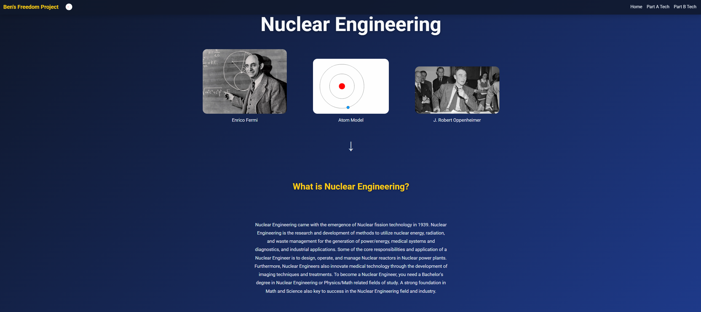
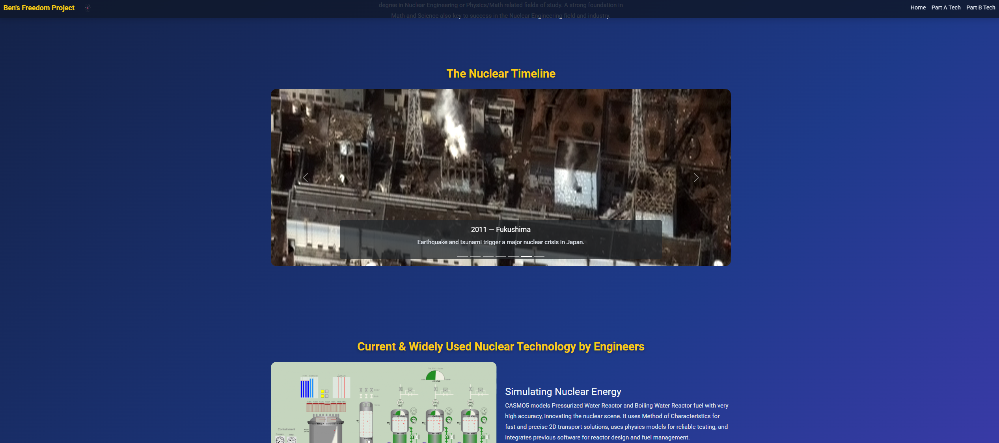

Throughout the entirety of SEP, we were planning and developing the right skills to create our SEP10 Freedom Project website and presentation. Our SEP10 Freedom Project is a project where we have to make a website and presentation about our assigned topic, with mine being Nuclear Engineering/Applied Physics, using our HTML, CSS, Bootstrap, and Tool Knowledge (My tool was Aframes.) First we had to create a Minimum Viable Product of our website than using feedback we collected from our peers we went beyond the Minimum Viable Product and finished our website. After, we developed our presentation and elevator pitches for the SEP Freedom Project Expo.
I started my SEP10 Freedom Project by developing the Minimum Viable Product of my website where I added Bootstrap components and a Bootstrap Grid System using my knowledge of Bootstrap components that I had amassed over the last couple months, combined with my knowledge of HTML and CSS. Some of the notable bootstrap components I added to my website were a Navbar so you oculd properly navigate the website and a carousel which I added in my beyond MVP to showcase the Nuclear Engineering timeline from the first Nuclear Reactor all the way to modern Small Modular Reactors. Additionally, at the bottom of my website I showcased my future invention, the Solar Fusion Phone, using my knowledge of the Aframes tool I amassed through youtube tutorials, tinkerign with the tool, and learning log entries. I also added images of several notable Nuclear Engineers as well as a short description of what the topic is for the website viewers. After I finished my MVP and Beyond MVP for my website, I started working on my presentation that I would utimately present to the class. I added things such as Fun Facts, the planning for my website through my wireframes and markdown plan, and an overview of several challenges and key components that I used to construct my website. After we finished presenting in class, we worked on oru elevator pitches where would deliver a short but compelling overview of our website to a panel of judges in the cafeteria.
When working on the MVP and Beyond MVP for my website, I ran into several problems that came from coding issues and bugs that lowered QOL for the website viewer. When working on the carousel for my beyond MVP that showcased the Nuclear Engineering timeline, I added captiosn so the viewer could know what the images were about and how they connected to Nuclear Engineering. The issue the came with adding captions was that they were difficult to read in front of the images. I solved this by adding a low transparency black box around the caption so the reader could see it, though this did take me some time to implement due to me not having much experience with the carousel component aside from my SHABR project.
One of the biggest takeways I took from this project was the importance of problem solving and persistence while coding HTML and CSS. While I developed my website, I ran into a myriad of issues and challenges as aforementioned. I solved this through researching solutions, experimenting with various approaches, and eventually finding ways to improve the user experience for my Nuclear Engineering Freedom Project website, all instead of giving up and persisting through challenges. Overall, this project helped me understand that planning and persistence is an important part of web design and creating a succesful project, helping me understand my mistakes and make the process more efficient.
For my next steps in SEP 10, I look forward to next year where will be learning about Javascript in SEP11 and tackle more exciting projects that challenge me even further, as well as finalizing our EDP here in SEP 10.
Project Repository
